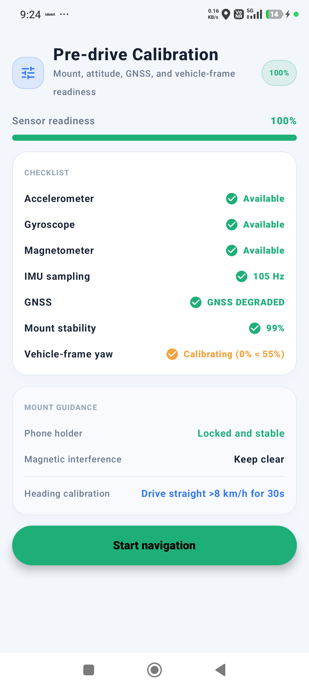
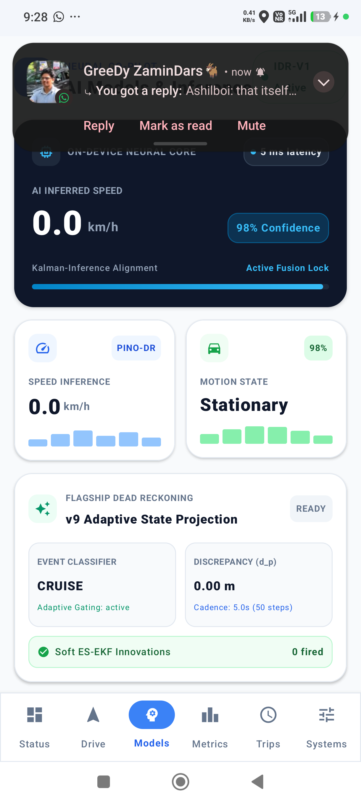
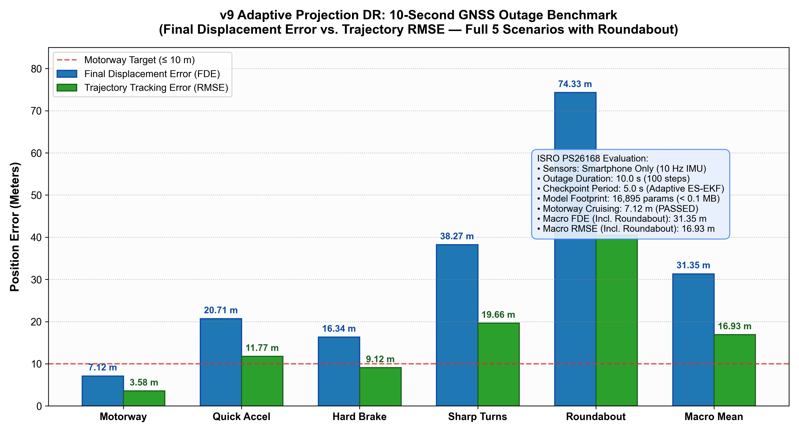

Tunnels • Underpasses • Dense Urban Canyons • EM Jamming

Live on-device sensor pre-drive calibration & attitude estimation without OBD-II.
Watch live dead-reckoning (Red) hold lane-level precision when GNSS drops at 35% journey.

PINO-DR deep learning forward velocity prediction + Driving Event classification.
Motorway • Quick Accel • Hard Brake • Sharp Turns • Roundabouts Included

When the sky goes dark, seamless navigation continues.